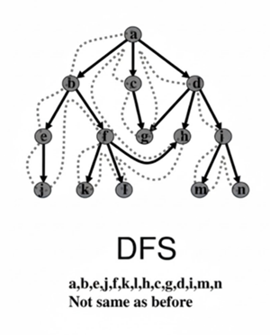

Búsqueda en Amplitud (BFS)
Es un algoritmo para recorrer grafos. Funciona por niveles, visitando primero todos los vecinos del nodo inicial antes de pasar a sus "nietos".
Utiliza una Cola (Queue) para mantener el orden de exploración, garantizando el principio FIFO (Primero en Entrar, Primero en Salir).
Esto asegura que siempre encuentra el camino más corto (en términos de número de pasos o aristas) en grafos sin pesos. Para evitar ciclos y repeticiones, se mantiene un registro de los nodos visitados.
Es fundamental para encontrar rutas mínimas en redes y para el rastreo sistemático.
Ejemplo de BFS
Consideremos el siguiente grafo:

El recorrido BFS comenzaría en el nodo A, visitando los nodos B y C antes de pasar a D y E.
Búsqueda en Profundidad (DFS)
La Búsqueda en Profundidad (DFS) es un algoritmo para recorrer grafos y árboles. A diferencia de BFS, DFS explora tan lejos como es posible a lo largo de cada rama antes de retroceder (backtracking).
Utiliza una Pila (Stack) para su implementación, la cual sigue el principio LIFO (Último en Entrar, Primero en Salir). Se introduce el nodo de inicio, y luego el algoritmo se mueve a un vecino no visitado, repitiendo el proceso recursivamente hasta que no puede ir más lejos. Luego, retrocede y explora otras ramas. Se utiliza comúnmente para la detección de ciclos, para encontrar componentes conectados y en problemas de laberintos.
A diferencia de BFS, DFS no garantiza encontrar el camino más corto.
Ejemplo de DFS
Usando el mismo grafo anterior:
El recorrido DFS comenzaría en el nodo A, explorando primero el nodo B y luego D antes de retroceder y explorar C.